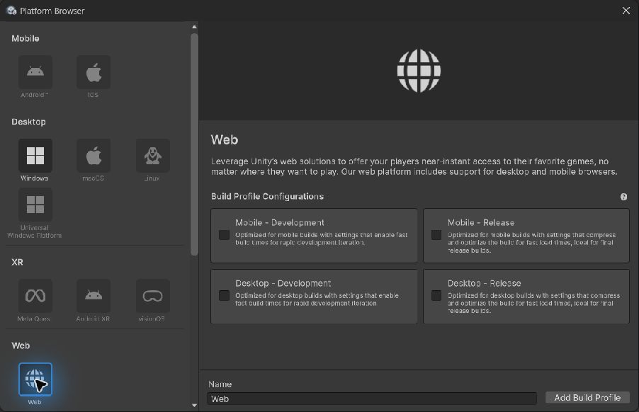
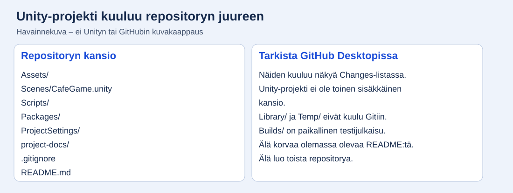

Viikko 34: Unity auki ja työ talteen
Repo on jo tehty? Aloita työvaiheesta 34-3 ja liitä projekti olemassa olevaan repositoryyn. Tee myös asiakastehtävät ohjaajan kanssa.
Aloita tästä yhdessä ohjaajan kanssa
Repository on jo tehty. Nyt ensimmäinen tavoite on saada oma kahvilan nimi Unityn peliruudulle. Seuraavaksi Kahvi-painike näyttää oman palautteen.
Avaa ensimmäisen onnistumisen ohje →Tee ensin tämä pieni kokeilu. Jatka vasta sen jälkeen viikkojen ohjeisiin.
Valitse työvaihe
Työvaihe 34-1
Lue toimeksianto ja valmistele kysymykset
- Avaa pääohjeen Toimeksianto. Kirjoita kaksi otsikkoa: Vaaditaan ja Avoin asia.
- Kirjoita Vaaditaan-kohtaan pelin pakolliset asiat. Ota ensimmäiseksi esimerkiksi aloitusvalikko.
- Kirjoita Avoin asia -kohtaan toimeksiannon neljä asiakkaalta kysyttävää asiaa: testiselaimet ja laitteet, kohderyhmä ja kierroksen pituus, top 5 -tasatilanteet sekä hyväksyjä.
- Muotoile näistä neljä kysymystä. Lisää kaksi omaa kysymystä toimeksiannosta. Käy lista ohjaajan kanssa läpi.
- Kirjoita jokaisen kysymyksen alle, mitä vastaus ratkaisee. Esimerkki: ”Kuinka pitkä kierros on?” → ”Ajastimen aloitusarvo”. Tallenna kuusi kysymystä viikon 34 päiväkirjaan.
Pysähdy ja tarkista: Kuusi erilaista kysymystä ja kuusi päätöstä löytyvät päiväkirjasta.
Jos ei onnistu: Jos et löydä kahta omaa kysymystä, näytä ohjaajalle toimeksiannosta kohta, jota et ymmärrä. Muotoilkaa siitä kysymys yhdessä.
Työvaihe 34-2
Keskustele asiakkaan kanssa
- Sovi ohjaajan kanssa keskustelun aika ja asiakkaan edustaja. Ohjaaja voi toimia toimeksiannon mukaisena asiakkaan sijaisena.
- Kysy lista yksi kysymys kerrallaan. Kirjaa vastauksen sisältö heti kysymyksen alle.
- Jos vastausta ei saada, kirjoita ”avoin”. Sovi, kuka selvittää sen seuraavaksi.
- Käy pakollisten ominaisuuksien lista asiakkaan kanssa läpi. Kirjaa päivä ja osallistujien roolit viikon 34 päiväkirjaan.
Pysähdy ja tarkista: Jokaisella kysymyksellä on vastaus tai merkintä avoin. Pakolliset ominaisuudet on käyty läpi.
Jos ei onnistu: Ohjaaja auttaa järjestämään keskustelun. Asiakasvastauksia ei täytetä esimerkkivastauksilla.
Työvaihe 34-3
Luo Unity-projekti ja kokeile selaimessa



- Avaa Unity Hub → Installs. Tarkista ohjaajan sopima Unity 6 -versio. Sen valikosta Add modules tarkista Web Build Support. Jos asennus vaatii ylläpitäjän, pyydä ohjaajan apu.
- Avaa Projects → New project. Valitse Universal 2D. Kirjoita Project name: CafeGame. Kuvan versio on 6000.5.8f1; käytä oppilaitoksen sopimaa Unity 6 -versiota ja omaa kansiotasi.
- Jos repository on valmiiksi koneella ja siinä on vain README ja .gitignore, luo Unity-projekti erilliseen väliaikaiseen kansioon. Liität sen repositoryyn työvaiheessa 34-4. Jos repositoryssa on jo Unity-projekti, avaa se Hubissa Add project from disk -toiminnolla ja jätä uuden projektin luonti väliin.
- Paina Create project ja odota editorin avautumista. Avaa Project-ikkunasta Assets. Luo tarvittaessa Scenes-kansio: hiiren oikea → Create → Folder.
- Valitse File → Save As. Tallenna scene nimellä CafeGame kansioon Assets/Scenes. Project-ikkunassa näkyy CafeGame-scene. Paina Play ja sitten uudelleen Play: palaat muokkaustilaan.
- Avaa File → Build Profiles. Unity 6:n alaversiosta riippuen valitse Web → Switch Platform tai Add Build Profile → Web → Add Build Profile → Switch Profile. Jos Web puuttuu, palaa moduulien tarkistukseen.
- Avaa Scene List. Lisää nykyinen scene Add Open Scenes -painikkeella; joissakin versioissa valitse ensin Override Global Scene List. Jätä mukaan vain Assets/Scenes/CafeGame. Poista SampleScene-rivin rasti, jos se on listassa.


- Valitse Build And Run. Luo kohdekansio Builds/Test Unity-projektin sisään. Älä käytä docs-kansiota. Odota selaimen avautumista; tyhjä tausta on tässä oikea tulos.
- Ota kuva selaimesta Windowsin kuvakaappaustyökalulla. Kirjaa Unity-version koko numero päiväkirjaan.
Pysähdy ja tarkista: Unity-projektissa on CafeGame-scene, ja Build And Run avaa testiversion selaimeen.
Jos ei onnistu: Älä avaa buildin index.html-tiedostoa kaksoisklikkaamalla. Käytä Build And Run -toimintoa. Jos tulee virhe, avaa Window → General → Console ja näytä ensimmäinen punainen viesti ohjaajalle.
Työvaihe 34-4
Liitä Unity-projekti olemassa olevaan repositoryyn

- Avaa GitHub Desktop ja valitse oma repository. Valitse Repository → Show in Explorer. Jätä tämä kansio auki.
- Jos omaa repositorya ei vielä ole koneella, käytä pääohjeen GitHub Desktop -kuvaohjetta. Jo perustettua repositorya ei luoda uudelleen.
- Sulje Unity. Avaa 34-3:ssa luomasi Unity-projektin kansio toisessa tiedostoikkunassa.
- Kopioi Assets, Packages ja ProjectSettings repositoryn juureen. Säilytä lähdekopio siihen asti, että uusi paikka avautuu. Älä kopioi Library-, Temp- tai Builds-kansioita. Älä korvaa repositoryn README- tai .gitignore-tiedostoa.
- Tarkista repositoryn .gitignore: siinä pitää olla Unity-pohjan säännöt Librarylle ja Tempille sekä Buildsille. Jos ne puuttuvat, pyydä ohjaajaa lisäämään Unity-pohja ennen committia.
- Avaa Hub → Projects → Add → Add project from disk. Valitse repositoryn juurikansio, jossa Assets, Packages ja ProjectSettings ovat. Avaa projekti ja kaksoisklikkaa Assets/Scenes/CafeGame.
Pysähdy ja tarkista: Unity avautuu repositoryn kansiosta ja CafeGame-scene näkyy.
Jos ei onnistu: Jos Hub ilmoittaa, ettei kansio ole Unity-projekti, tarkista sisäkkäiset kansiot. Assets-kansion täytyy olla suoraan valitsemassasi kansiossa.
Työvaihe 34-5
Tallenna työ GitHubiin
- Luo repositoryn juureen project-docs/evidence/week-34. Tallenna selainkuva nimellä web-test.png. Tarkista, että kuva on oikeasti PNG.
- Täydennä README.md: pelin työnimi ja yksi virke pelin tarkoituksesta. Älä poista aiempaa hyödyllistä sisältöä.
- Täytä viikon 34 päiväkirja pääohjeessa, lataa koko päiväkirja ja siirrä tiedosto project-docs/projektipaivakirja.md-polkuun.
- Avaa GitHub Desktop → Changes. Tarkista kansiokartan mukaan, mitä muutoksia tallennetaan. Jos Library tai Temp näkyy, pysähdy ja korjaa .gitignore ohjaajan kanssa.
- Kirjoita Summary-kenttään ”Lisää Unity-projektin pohja”. Paina Commit to main ja sitten Push origin. Jos painikkeessa lukee Publish branch, julkaise olemassa olevan repositoryn haara.
- Valitse Repository → View on GitHub. Tarkista, että tiedostot ja commit näkyvät. Lisää commit-linkki päiväkirjaan ja vie päivitetty päiväkirja myös Gitiin.
Pysähdy ja tarkista: GitHubissa näkyvät Unity-projekti, selainkuva ja päiväkirja. Osaat näyttää repositoryn ja oman commitin.
Jos ei onnistu: Jos Changes on tyhjä, varmista että Unity-projekti on juuri tämän repositoryn kansiossa. Push on valmis vasta, kun commit näkyy verkkosivulla.